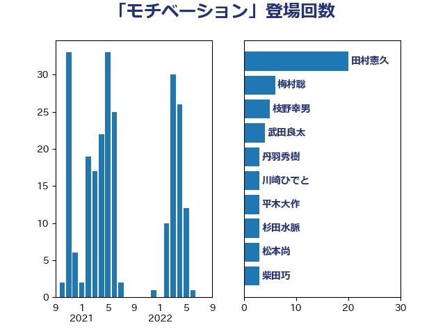

単語「モチベーション」

| 田村憲久 | 自由民主党 | 20 回 |
| 梅村聡 | 日本維新の会 | 6 回 |
| 枝野幸男 | 立憲民主党 | 5 回 |
| 武田良太 | 自由民主党 | 4 回 |
| 丹羽秀樹 | 自由民主党 | 3 回 |
| 川崎ひでと | 自由民主党 | 3 回 |
| 平木大作 | 公明党 | 3 回 |
| 杉田水脈 | 自由民主党 | 3 回 |
| 松本尚 | 自由民主党 | 3 回 |
| 柴田巧 | 日本維新の会 | 3 回 |
| 田村智子 | 日本共産党 | 3 回 |
| 石川香織 | 立憲民主党 | 3 回 |
| 礒崎哲史 | 国民民主党 | 3 回 |
| 阿達雅志 | 自由民主党 | 3 回 |
| 三原じゅん子 | 自由民主党 | 2 回 |
| 吉田統彦 | 立憲民主党 | 2 回 |
| 小林鷹之 | 自由民主党 | 2 回 |
| 小野泰輔 | 日本維新の会 | 2 回 |
| 岸真紀子 | 立憲民主党 | 2 回 |
| 松本剛明 | 自由民主党 | 2 回 |
| 柳ヶ瀬裕文 | 日本維新の会 | 2 回 |
| 根本幸典 | 自由民主党 | 2 回 |
| 森本真治 | 立憲民主党 | 2 回 |
| 浅野哲 | 国民民主党 | 2 回 |
| 渡辺周 | 立憲民主党 | 2 回 |
| 熊野正士 | 公明党 | 2 回 |
| 片山大介 | 日本維新の会 | 2 回 |
| 田村まみ | 国民民主党 | 2 回 |
| 空本誠喜 | 日本維新の会 | 2 回 |
| 美延映夫 | 日本維新の会 | 2 回 |
| 萩生田光一 | 自由民主党 | 2 回 |
| 足立康史 | 日本維新の会 | 2 回 |
| 金村龍那 | 日本維新の会 | 2 回 |
| 鈴木俊一 | 自由民主党 | 2 回 |
| 音喜多駿 | 日本維新の会 | 2 回 |
| 三木圭恵 | 日本維新の会 | 1 回 |
| 倉林明子 | 日本共産党 | 1 回 |
| 前原誠司 | 国民民主党 | 1 回 |
| 古賀友一郎 | 自由民主党 | 1 回 |
| 吉良よし子 | 日本共産党 | 1 回 |
| 大島敦 | 立憲民主党 | 1 回 |
| 大野泰正 | 自由民主党 | 1 回 |
| 奥下剛光 | 日本維新の会 | 1 回 |
| 守島正 | 日本維新の会 | 1 回 |
| 安江伸夫 | 公明党 | 1 回 |
| 安達澄 | 無所属 | 1 回 |
| 小宮山泰子 | 立憲民主党 | 1 回 |
| 小寺裕雄 | 自由民主党 | 1 回 |
| 小林史明 | 自由民主党 | 1 回 |
| 小沢雅仁 | 立憲民主党 | 1 回 |
| 小泉進次郎 | 自由民主党 | 1 回 |
| 山下芳生 | 日本共産党 | 1 回 |
| 山本博司 | 公明党 | 1 回 |
| 山本左近 | 自由民主党 | 1 回 |
| 山本香苗 | 公明党 | 1 回 |
| 岩渕友 | 日本共産党 | 1 回 |
| 平井卓也 | 自由民主党 | 1 回 |
| 後藤茂之 | 自由民主党 | 1 回 |
| 本村伸子 | 日本共産党 | 1 回 |
| 杉尾秀哉 | 立憲民主党 | 1 回 |
| 東徹 | 日本維新の会 | 1 回 |
| 柚木道義 | 立憲民主党 | 1 回 |
| 森山浩行 | 立憲民主党 | 1 回 |
| 橋本聖子 | 無所属 | 1 回 |
| 泉健太 | 立憲民主党 | 1 回 |
| 浜口誠 | 国民民主党 | 1 回 |
| 深澤陽一 | 自由民主党 | 1 回 |
| 渡辺孝一 | 自由民主党 | 1 回 |
| 牧山ひろえ | 立憲民主党 | 1 回 |
| 畦元将吾 | 自由民主党 | 1 回 |
| 石井啓一 | 公明党 | 1 回 |
| 石川博崇 | 公明党 | 1 回 |
| 神谷裕 | 立憲民主党 | 1 回 |
| 緑川貴士 | 立憲民主党 | 1 回 |
| 舩後靖彦 | れいわ新選組 | 1 回 |
| 荒井優 | 立憲民主党 | 1 回 |
| 菅義偉 | 自由民主党 | 1 回 |
| 野上浩太郎 | 自由民主党 | 1 回 |
| 金子恭之 | 自由民主党 | 1 回 |
| 長妻昭 | 立憲民主党 | 1 回 |
| 長浜博行 | 無所属 | 1 回 |
| 阿部司 | 日本維新の会 | 1 回 |
| 青柳陽一郎 | 立憲民主党 | 1 回 |
| 須藤元気 | 無所属 | 1 回 |